Your Transition Roadmap — From EA to AI EA
This Chapter Is About You
We have spent fourteen chapters talking about technology, architecture patterns, governance frameworks, and organizational design. All of that was about transforming your enterprise. This final chapter is different. This chapter is about transforming yourself.
You have been an Enterprise Architect — perhaps for years, perhaps for decades. You have designed systems that process millions of transactions, guided organizations through cloud migrations, and navigated the tangled politics of technology decisions in large, complex enterprises. You have earned your stripes. And now you are looking at a landscape that is shifting underneath your feet, wondering how to evolve your career so that you are not just relevant, but leading the charge.
The good news is that you are not starting from zero. Not even close. The transition from Enterprise Architect to AI Enterprise Architect is not a career change — it is a career expansion. Think of it less like learning a new profession and more like a jazz musician picking up a new instrument. The theory of music is the same. The ear is already trained. You just need to learn where the keys are and practice until your fingers find them naturally.
This chapter gives you a concrete, honest, and practical roadmap for making that transition. No hand-waving, no vague advice about “staying curious.” Just a plan you can start executing on Monday morning.
The Skills Gap — Honestly Assessed
Before you can close a gap, you need to see it clearly. So let us be unflinchingly honest about where you stand right now — both your strengths and the areas where you need to grow.
What You Already Have (Your Superpowers)
Here is something that most AI courses and bootcamps will never tell you: the hardest parts of AI Enterprise Architecture are not about AI at all. They are about architecture. And you already have those skills.
| Skill | Why It Matters for AI |
|---|---|
| Systems thinking | AI doesn’t exist in isolation — you see the full picture |
| Integration design | Connecting AI to existing systems is the hard part |
| Governance frameworks | AI governance is governance — with new concerns |
| Stakeholder management | AI projects fail politically more often than technically |
| Risk assessment | AI introduces new risks you’re trained to evaluate |
| Vendor evaluation | You know how to cut through sales pitches |
| Non-functional requirements | Latency, security, scalability apply to AI too |
| Architecture documentation | Model cards, AI registers — just new artifacts |
Do not underestimate the value of these skills. Every week, a brilliant ML engineer builds a model that never makes it to production because nobody designed the integration properly, nobody thought about the governance implications, and nobody managed the stakeholders who needed to approve the deployment. That is the gap you were born to fill. The world has plenty of people who can fine-tune a transformer. What it desperately needs are people who can take that model and make it work inside a real enterprise, at scale, with all the messy constraints that implies.
What You Need to Add
Now for the honest part. There are real skills you need to acquire, and pretending otherwise would be doing you a disservice. The table below lays out what you need to learn, how deeply you need to learn it, and roughly how long it will take if you are dedicating focused time to it.
| Skill | Depth Needed | Time to Acquire |
|---|---|---|
| How LLMs work (conceptual) | Deep understanding, not math | 1-2 weeks |
| Prompt engineering | Practitioner level | 1 week + ongoing practice |
| RAG architecture | Design and evaluate | 2 weeks |
| Data architecture for AI | Extend existing knowledge | 2 weeks |
| MLOps concepts | Architecture level | 1 week |
| AI cost modeling | Practical application | 2-3 days |
| Python fluency (reading) | Read and understand, not write production code | 2-4 weeks |
| Responsible AI | Framework-level | 1 week |
Add all of that up and you are looking at roughly eight to twelve weeks of focused learning. That is not a sabbatical. That is not a master’s degree. That is a quarter of dedicated professional development — the kind of investment you have probably made before when cloud computing arrived, or when microservices reshaped how we build systems. You did it then, and you can do it now. The difference this time is that the wave is bigger, the timeline is compressed, and the reward for being early is enormous.
The 90-Day Plan

Theory is comfortable, but plans create momentum. What follows is a ninety-day plan that takes you from “interested in AI” to “operating as an AI Enterprise Architect.” It is structured in three phases, each building on the last, and each ending with a concrete milestone so you know you are on track.
Days 1-30: Learn the Fundamentals
The first thirty days are about building your conceptual foundation and getting your hands dirty with the technology. You cannot architect what you do not understand, and you cannot understand AI systems by reading about them alone. You need to build things — small, imperfect, instructive things.
Week 1: Conceptual Foundation. Start by reading the first three chapters of this book if you have not already. They will give you the mental models you need for everything that follows. More importantly, run the companion notebooks. Yes, even if you struggle with Python. Especially if you struggle with Python. The struggle is the learning. Set up a development environment on your machine — Python, Jupyter, and API keys for at least one LLM provider. This is your workshop, and you need it ready before you can start building.
Week 2: Hands-On with LLMs. This is the week you stop reading and start building. Create a simple chat application using an LLM API — it does not need to be fancy, it just needs to work. Then spend time experimenting with prompt engineering techniques: zero-shot prompting, few-shot prompting, chain-of-thought reasoning. Feel the difference between a lazy prompt and a well-crafted one. By the end of the week, build a basic RAG pipeline using a vector database. This single exercise will teach you more about AI architecture than any conference talk ever could.
Week 3: Architecture Patterns. Now that you have a feel for the technology, zoom out to the architecture level. Read Chapters 4 and 5, which cover data architecture and integration patterns. Then do something that will feel very natural to you: take three existing systems in your enterprise and map them to potential AI integration patterns. Which ones are candidates for RAG? Which ones could benefit from LLM-powered summarization or classification? Draft a data readiness assessment for one of those systems. You are starting to think like an AI Enterprise Architect.
Week 4: Cloud and Cost. Ambition without economics is fantasy. Read Chapter 8 on cloud platforms and Chapter 12 on cost management. Run the cost calculator notebook with your enterprise’s expected volumes — real numbers, not hypothetical ones. Compare pricing across two or three cloud providers for the use case you identified in Week 3. By the end of this week, you should be able to have a credible conversation about what an AI deployment will actually cost.
Milestone: At the end of thirty days, you can explain how a RAG system works to a technical audience, build a working demo, and estimate costs for a real deployment. You are conversational. You are not an expert yet, but you are no longer on the outside looking in.
Days 31-60: Apply to Your Enterprise
The second thirty days are about taking everything you learned and applying it to the enterprise you actually work in. This is where your existing EA skills become your superpower. Anyone can build a demo. Only an Enterprise Architect can connect that demo to the real world.
Weeks 5-6: Assessment. Conduct a thorough AI readiness assessment of your application portfolio. Look at the data landscape, the integration points, the governance gaps, and the organizational readiness. Identify the top five AI opportunity areas — the ones that sit at the intersection of high business value and genuine feasibility. Then present your findings to your leadership team. This is your first act as an AI Enterprise Architect, and it matters. Do it with the rigor and clarity that your stakeholders expect from you.
Weeks 7-8: Design. Pick your top opportunity and design a complete AI architecture for it. This means a component diagram, a data flow, a security model, and a cost estimate. It means addressing governance, responsible AI, and operational concerns. And it means getting feedback — from other architects, from data engineers, from security. Architecture is a collaborative discipline, and AI architecture even more so. Share your design early and iterate based on what you hear.
Milestone: At the end of sixty days, you have a concrete AI architecture proposal sitting on your desk. Not a vague vision document, not a vendor-supplied slide deck — a real architecture that you designed and that you can defend, decision by decision, trade-off by trade-off.
Days 61-90: Build and Lead
The final thirty days are about moving from design to reality. This is where you prove — to yourself and to your organization — that you can deliver.
Weeks 9-10: Prototype. Build a working prototype, or lead the team that builds it. Take the quickest path to value: a managed LLM API, a vector database, and a simple user interface. Do not over-engineer it. The goal is not architectural perfection — the goal is to put something real in front of real users and get their feedback. That feedback will be worth more than another month of design.
Weeks 11-12: Governance and Scale. With a working prototype in hand, shift your attention to the organizational scaffolding that will let AI succeed at scale. Draft an AI governance framework for your organization. Propose a team structure, drawing on the models we discussed in Chapter 13. Create an AI architecture roadmap that lays out a phased approach — start small, prove value, expand deliberately. Then present all of it to executive leadership. Walk them through the prototype, the governance framework, and the roadmap in a single coherent narrative.
Milestone: At the end of ninety days, you are operating as an AI Enterprise Architect in practice, not just in title. You have a working prototype that demonstrates feasibility, a governance framework that demonstrates maturity, and a roadmap that demonstrates vision. That is a powerful combination.
Common Pitfalls in the Transition
Every transition has its traps, and this one is no different. I have watched dozens of architects make this journey, and the same pitfalls claim victims over and over. Here is how to avoid them.
Pitfall 1: Trying to Become a Data Scientist
This is the most common mistake, and it is the most costly in terms of wasted time. You do not need to train models from scratch. You do not need to understand transformer attention mechanisms at a mathematical level. You do not need to write production-grade Python. Trying to acquire those skills will burn months that you could have spent on the work that actually matters.
What you need is the ability to understand these concepts well enough to make sound architectural decisions and to have informed, productive conversations with the ML engineers on your team. You need to be a great collaborator, not a second-rate data scientist.
Here is a useful litmus test for whether you know enough: Can you explain to a business stakeholder why retrieval-augmented generation is a better fit than fine-tuning for their particular use case? Can you push back credibly when a vendor makes bold claims about model accuracy? Can you design a system that handles model failures gracefully, with fallbacks and circuit breakers and degraded-mode behavior? If you can do those things, you are ready. The linear algebra can wait — possibly forever.
Pitfall 2: Waiting Until You’re “Ready”
There is a particular kind of perfectionism that afflicts experienced professionals. You have spent years being the expert in the room, and the idea of stepping into a space where you are a beginner feels deeply uncomfortable. So you read one more book, take one more course, watch one more conference talk. You are preparing, you tell yourself. But what you are actually doing is hiding.
You will never feel ready. AI is moving too fast for anyone — including the people who build these models — to feel fully caught up. The landscape shifts every few months in ways that invalidate yesterday’s assumptions. The only way to learn is to build something real, on a real business problem, with real constraints. Start before you feel ready. You will learn more in two weeks of building than in two months of studying.
Pitfall 3: Going Solo
AI architecture is a team sport, and trying to do it alone is a recipe for failure. You need allies across the organization. You need data engineers who understand the data landscape intimately — where the quality is good, where it is terrible, and where the bodies are buried. You need security architects who can assess AI-specific risks like prompt injection, data leakage through model outputs, and adversarial attacks. You need business stakeholders who can validate use cases and champion the work when budget conversations get difficult. And you need at least one ML engineer who can build what you design.
If you are wondering where to start building your coalition, begin with the data engineering team. They are usually the most natural allies because they already think about data quality, data pipelines, and data governance every day. They understand why “garbage in, garbage out” is not just a cliché but a daily operational reality. When you walk in and start talking about data readiness for AI, they will be the first to nod in recognition.
Pitfall 4: Over-Engineering the First Project
Your instincts as an Enterprise Architect will tempt you to design a comprehensive, scalable, enterprise-grade AI platform for your first project. Resist that temptation with everything you have. Your first AI project should be almost embarrassingly simple. An internal Q&A chatbot that answers questions about company documentation using RAG. A document classification system that routes incoming requests to the right department. A meeting summarization tool that saves people thirty minutes a day.
What your first project should emphatically not be is an AI-powered autonomous decision engine with multi-agent orchestration, real-time learning, and cross-domain knowledge synthesis. That project will take a year, consume enormous political capital, and probably fail — not because the technology is not ready, but because the organization is not ready for it yet.
Save the ambitious projects for after you have proven value and built organizational trust. A small, successful AI deployment does more for your credibility — and for your organization’s AI maturity — than a grand vision that never ships.
Pitfall 5: Ignoring the Politics
AI touches every part of the organization in ways that few technologies have before. It changes workflows, redistributes expertise, and raises uncomfortable questions about the future of certain roles. People will feel threatened, even if their jobs are perfectly safe. Budgets will be contested because everyone wants a piece of the AI investment. Credit for successful projects will be claimed by many and shared by few.
You need to navigate this landscape with the same care you bring to your technical designs. Frame AI as a tool that helps everyone do their job better — because that is what it is — rather than as a replacement for anyone. Give credit generously, especially to the teams who provide the data and the domain expertise that make AI systems work. And be strategic about your first project: make it a visible win for someone who has political capital and organizational influence. When a senior leader’s pet problem gets solved by the AI system you architected, suddenly your next project gets funded a lot more easily.
Building Your Portfolio
As you make this transition, you will want to build a portfolio of artifacts that demonstrate your AI Enterprise Architecture competence. These are the tangible proof points that show you can do this work — whether you are seeking a new role, a promotion, or simply the credibility to lead AI initiatives in your current organization.
Artifacts That Demonstrate AI EA Competence
| Artifact | What It Shows |
|---|---|
| AI reference architecture for your enterprise | You can design at the enterprise level |
| Working RAG prototype | You understand the technology hands-on |
| AI governance framework | You think about risk, ethics, and compliance |
| Cost model for an AI deployment | You make practical, business-aware decisions |
| AI readiness assessment | You can evaluate and prioritize opportunities |
| Model card for a deployed AI system | You understand documentation and lifecycle |
Each of these artifacts tells a story about a different facet of your capability. Together, they paint a picture of an architect who can operate at every level — from high-level strategy to hands-on prototyping, from technical design to governance and risk management. You do not need all six on day one. Build them over time as you work through real projects, and each one will reinforce the others.
Certifications Worth Considering
| Certification | Provider | Value |
|---|---|---|
| Google Cloud Generative AI Leader | Validates GenAI knowledge, fast to earn | |
| Google Cloud ML Engineer | Deep technical credential | |
| AWS ML Specialty | AWS | Comprehensive ML on AWS |
| AI Engineering Professional | Various | Emerging credential |
Certifications are not strictly necessary — nobody ever got hired solely because of a certification — but they serve two useful purposes. First, they signal commitment. When a hiring manager or a CTO sees that you invested time in structured AI learning, it tells them you are serious about this transition, not just dabbling. Second, the preparation process provides a structured learning path that fills gaps you might not even know you had. Think of certifications as a useful complement to hands-on experience, not a replacement for it.
The Future of AI Enterprise Architecture
Let me share where I think this field is heading, because understanding the trajectory will help you position yourself for what comes next — not just what is happening today.
What’s Coming
AI agents are going to become mainstream in enterprise environments, and when they do, architects will design agent platforms the same way they design microservice platforms today — with orchestration layers, security boundaries, observability, and well-defined interfaces between agents. This is not science fiction. The foundational patterns are already emerging, and the architects who understand them early will have a significant head start.
We are also going to see the rise of AI-native applications — systems that are designed around AI capabilities from the very beginning, rather than having AI bolted on as an afterthought. This is analogous to the shift from “cloud-enabled” to “cloud-native” that happened over the last decade. The architectural patterns are fundamentally different when AI is a first-class citizen in your design, and learning to think in those patterns will be a critical skill.
Regulation is accelerating, and it will only intensify. The EU AI Act is already reshaping how organizations deploy AI in Europe, and industry-specific regulations are following close behind. Governance is becoming mandatory, not optional, and organizations that built governance frameworks early — the kind we discussed in Chapters 6 and 7 — will have an enormous competitive advantage over those scrambling to comply after the fact.
Multi-modal AI is becoming standard. Systems that can process text, images, video, and audio together — and reason across all of those modalities — are moving from research curiosity to production reality. The architectural implications are significant, from data pipelines to storage to inference infrastructure, and architects need to start thinking about multi-modal workloads now.
And perhaps most importantly, costs are going to continue falling while capabilities continue rising. What costs ten dollars today will cost ten cents in two years. This is not wishful thinking — it is the consistent pattern we have seen since the first GPT models became commercially available. As costs fall, use cases that are economically marginal today will become no-brainers, and the demand for architects who can design and deploy these systems will grow accordingly.
Your Role Evolves
The AI Enterprise Architect role is going to become as standard and as essential as the Cloud Architect role is today. That transition took about a decade for cloud. For AI, it will happen faster because the business pressure is more intense and the technology is more accessible. You are getting ahead of a wave that will reshape every enterprise in every industry, and the skills you are building now — the ability to bridge AI technology and enterprise architecture, to translate between data scientists and business stakeholders, to design systems that are both innovative and responsible — will be in demand for the next decade and beyond.
Final Thoughts
You have spent your career designing the systems that run businesses. You have wrestled with legacy integrations, navigated vendor lock-in, balanced competing stakeholder demands, and somehow kept the lights on while pushing the architecture forward. That career has prepared you for this moment more than you probably realize.
The systems you design next are going to be more capable, more autonomous, and more complex than anything you have worked on before. They will make decisions, generate content, and interact with users in ways that feel almost human. And the enterprises that deploy these systems well — the ones that get the architecture right, that govern responsibly, that scale thoughtfully — will be the ones that thrive in the decade ahead.
Those enterprises will succeed because they had architects who understood both worlds: the reliability, rigor, and discipline of enterprise architecture, and the possibilities, patterns, and pitfalls of artificial intelligence. Architects who could hold the tension between innovation and governance, between ambition and pragmatism, between what AI can do and what it should do.
That architect is you. You have the foundation from years of enterprise work. This book gave you the extension into AI. The companion notebooks gave you the hands-on experience. And this chapter gave you the plan.
Now go build something. Start small, start Monday, and do not wait until you feel ready. The enterprise that you serve — and the career that you are building — will be better for it.
Companion Notebook
 — A
structured assessment tool: input your enterprise’s current state (data
maturity, team skills, infrastructure, governance) and generate a
prioritized AI readiness report with recommended next steps.
— A
structured assessment tool: input your enterprise’s current state (data
maturity, team skills, infrastructure, governance) and generate a
prioritized AI readiness report with recommended next steps.